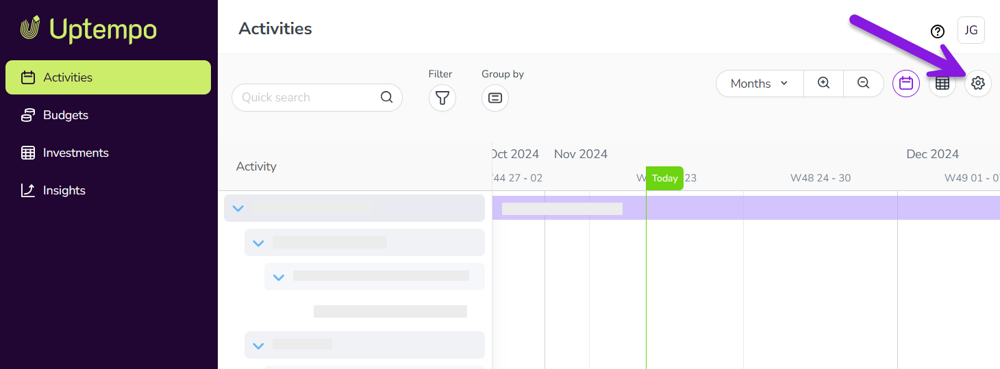

Activity rules define how the hierarchy of activities is structured. You create rules to define which activity type or activity type group can be used as root elements (the highest level in the activity hierarchy) and how other activity types and activity type groups can be created below it.
Example
Let's assume that you have created the following three activity type groups and assigned the activity types to them:
Now you want to define that the activity types of the Plan group can be created as root elements, and the activity types of the Campaign group as descendants of those root elements. The activity types of the Tactic group should only be available as descendants of the Campaign group:
You define these relationships, shown in the previous image with the purple connections, by rules. Note that the rule always states who is the parent in the hierarchy, shown here by the wider part of the link.
How activity rules work
Basic principles of activity rules
A rule defines a parent–child relationship by specifying which activity types can be created as children of other activity types.
In a rule, either an activity type or an activity type group can be used on both the parent and child side of the relationship.
There is no limit to the number of rules you can create.
An activity type or activity type group can have one or multiple parents. Assigning multiple parents is useful when designing complex hierarchies or when adjusting how the hierarchy behaves over time (for example, between plan years).
You cannot create a rule that assigns the same attribute to both the parent and child activity types or type groups. Child activities inherit attributes and their values from activities higher in the hierarchy. To prevent an activity from having multiple values for the same attribute, each attribute can appear only once along a single hierarchy path.
You cannot create a rule that results in a circular relationship. For example, if Group A is defined as the parent of Group B, you cannot create another rule that makes Group B (or any activity type within Group B) a parent of Group A (or any activity type within Group A).
Rule creation and management
Administrators create and manage activity rules in the Rules section of Activity Configuration. Existing rules are displayed in a table, where each row defines a single parent–child relationship:
Defining root elements
A row with no parent group and no parent type defines a root element. In the following example, the Plan group is created without a parent. As a result, all activity types assigned to the Plan group can be used as root elements:
Defining relationships between activity type groups
Assume you want to define a relationship in which the activity type group Group 2 is a child of the activity type group Group 1:
The following screenshot shows the corresponding rule in the second row of the table. Group 1 is set as the Parent Group (first column), and Group 2 is set as the Child Group, while the applicable types within both groups are set to ANY. This rule allows all activity types in the Group 2 group to be created as children of all activity types in the Group 1 group:
Defining relationships between activity types
In some cases, an activity type should only be allowed as a child of specific activity types. For example, you may want certain campaign types to be used only within a strategically oriented plan.
In the following example, Activity Type K (assigned to Group 1) allows only Activity Types D and H to be created as its children:
You define this relationship as follows:
To enforce this exclusive relationship for Activity Type K, you must also define rules for Activity Types B and E that are also in Group 1. One straightforward approach is to link these activity types only to activity types in the Group 2 group. For example, you can define Activity Type E as the parent of Activity Type J, and Activity Type B as the parent of Activity Type C:
Create activity rules
Before you begin
Before you can create a rule, you must first:
Create the activity types for which you want to define rules.
Create activity type groups (if applicable), and add the activity types to them.
Create a new activity rule
You can create a new activity rule at any time.
In the Activities section, click Settings: 
In the Activity Configuration menu, click Activities > Rules. The Activity Rules Configuration page is shown, displaying the table of activity rules.
Click Add a rule. A new line is added to the bottom of the table of activity rules.
Use the menus in each table column to construct the rule. Remember that every activity rule defines a parent-child relationship: use the Parent Group and Parent Type columns to define the parent in the relationship, and the Child Group and Child Type columns to define the child.
To finish creating the rule, click Save in the Action column.
Your new activity rule takes effect in your activity hierarchy immediately, and is enforced whenever an applicable activity is created.